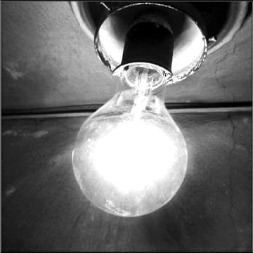
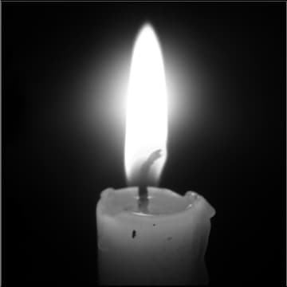

Acest text critic și autocritic l-am trimis în urmă cu aproape doi ani (2 februarie 2008, ziua unui mare praznic ortodox, proniator detaliu) „Centrului de presă al Patriarhiei”, încercând să-i prevenim or măcar să-i sensibilizăm, cu franchețe, bunăvoință și argumente peremptorii, pe toți responsabilii de atunci ai respectivului colegiu redacțional, asupra unor evidente carențe conceptuale și slăbiciuni informale ale unui important compartiment din componența sa. O tăcere adâncă s-a lăsat peste observațiile noastre îndreptățite și pe deplin controlabile de către orice om de bună credință și cu o pregătire medie, fapt care ne determină să publicăm acum, în această rubrică de suflet, articolul care i-a lăsat fără răspuns pe responsabilii acestui esențial releu mediatic creștin-ortodox, obligat prin definiție să limiteze sau chiar să excludă amatorismul din activitatea lui. Tăcerea oficială din superbie sau răspunsurile facile și insinuante, strecurate ca din întâmplare de prin ungherele ocultofile ale unor „tradiționaliști dinamici”, „reformiști” și „manageri” pseudo-religioși, strecurați cu viclenie peste sau printre responsabilii amintiți, nu rezolvă în nici un mod criticile justificate, ci doar le confirmă și amplifică ecoul, fiindcă am mai spus-o și cu alte prilejuri, Adevărul nu poate fi ucis nici cu pumnalele invidiei, nici cu spânzurătorile calomniei și nici cu otrava tăcerii, iar „bazele de date” terestre, dirijate interesat sau tendențios, devin ineficiente la o simplă pană de curent (Sic!), dar și mai teribil sunt șterse de Sus ca tot ceea ce este impus efemer…
Am fost îndemnat de duhovnicul meu, dar și de către mulți creștini cu fapta, în mod statornic, să scriu ceea ce cred și pot constata obiectiv, pe cât posibil omenește, despre „primul cotidian creștin din România”, ziarul „Lumina”, care „apare fără întrerupere din 7 februarie 2005 și se va extinde la nivel național”, după cum am aflat oficial de la centrul de presă al Patriarhiei. Voi mărturisi cu franchețe, de la bun început, că nu mi-am dorit de fel o asemenea misiune delicată, întrucât spiritul critic și autocritic pe care îl folosesc după caz, mă obligă întotdeauna să consemnez evidențele și esențele dureroase, trecând hotărât și tranșant peste jocul amăgitor, interesat, satisfăcut și suficient al aparențelor, atât de prezent din păcate în mai toată mass-media contemporană, deci și în acest „cotidian creștin”, cu intenții programative ample, dar cu realizări mai mult decât modeste, dacă vrem să ținem cont de exigențele reale, spirituale, morale, profesionale și culturale ale unei publicații creștine semnificative și ziditoare, vrednice de acest nume.
Deși realizez foarte bine că sunt rari oamenii care știu să se bucure cu folos de o critică întemeiată (în sensul nobil și îndreptător pe care îl recomanda Sfântul Grigorie Teologul), doar cu Mila lui Dumnezeu voi scrie numai adevărul, chiar dacă acesta va și durea, înainte de a tămădui… Ne revine în prim-planul conștiinței o întâmplare pilduitoare din viața marelui chirurg român, profesorul dr. Dan Gavriliu (autorul unei metode de esofagoplastie ce-i poartă numele!), extrem de sugestivă pentru modul în care trebuie primită o critică sinceră, pertinentă și vădit îndreptătoare.

Profesorul a ajuns cu întârziere la un congres internațional de chirurgie, motiv pentru care s-a strecurat cu sfiiciune într-o sală arhiplină (vreo patru mii de chirurgi din toată lumea). Totuși, cel care conducea în acea zi lucrările l-a zărit și, încălcând în mod neobișnuit protocolul, a oprit un referent din expunere, semnalând prezența sa; întreaga asistență s-a ridicat spontan de pe scaune și l-a ovaționat îndelung pe profesorul român, pentru realizările sale chirurgicale excepționale.
Apoi referentul, un profesor chirurg japonez, și-a continuat prezentarea — o metodă proprie de esofagoplastie (la care lucrase cinci ani!), reușind să câștige destule sufragii. Profesorul Gavriliu s-a înscris la discuții pe marginea metodei și în mai puțin de două zeci de minute le-a demonstrat tuturor celor prezenți, cât se poate de binevoitor, dar și implacabil prin evidența arguțiilor, că metoda japonezului nu este viabilă! Profesorul japonez s-a ridicat ceremonios, mulțumindu-i pentru criticile pe deplin lămuritoare; apoi, scuzându-se cu modestie, „nu am știut că la congres va fi prezent și marele chirurg român” (figurând în anuarul mondial, pe ramura sa de specialitate, între primii cinci mari chirurgi din toate timpurile!), s-a așezat liniștit la loc. Profesorul român a făcut atunci o remarcă extrem de interesantă pentru noi, toți: „Cineva care poate primi cu atâta modestie, recunoștință și bună cuviință o critică obiectivă ce-i anulează eforturile a cinci ani de muncă, cu siguranță pe viitor va descoperi ceva cu adevărat valoros!”.
Păstrând în mod evident proporțiile, dar neuitând esența ziditoare a acestei întâmplări reale, voi încerca să fac câteva observații de fond și de formă privind ziarul „Lumina”, nădăjduind că toți creștinii, care lucrează sau colaborează la această publicație, vor primi — măcar cu modestia chirurgului japonez — criticile acestea lesne de verificat, constructive și posibil îndreptățite:
1) Titlul nu slujește deloc scopului creștin anunțat pe-o manșetă albastră, din pricina faptului că ziarul nu arată clar, fără nici o umbră de echivoc, încă de la început, apartenența sa pur ortodoxă; la modul generic, declarativ și indistinct vorbesc despre „lumină” destui ritori moderni (necredincioși sau rău credincioși) într-o lume deja secularizată, dar despre Lumina Ortodoxiei vorbesc cu adevărat luminat doar cei înviați lăuntric, încă de pe-acum. Deci, mult mai adecvat, limpede, sugestiv și ziditor de suflete ar fi fost un titlu ca „Lumina Ortodoxiei”, întrucât Însuși Mântuitorul Hristos i-a îndemnat pe apostolii Săi: „Voi sunteți lumina lumii!”.
Deci, nu orice „lumină” este călăuzitoare și mântuitoare, ci numai lumina dreptslăvitoare, Lumina Domnului nostru Iisus Hristos. Ca formă, titlul ales este în subsidiar și purtătorul unei tautologii involuntare, dar jenante: nu-i nevoie să scrii pe un ziar, că este… ziar (aceeași greșeală au făcut-o și alții, cu pretenții editoriale „senioriale”). Intuim că în numele toleranței creștine, rău înțelese, s-a ales acest titlu nereprezentativ din punct de vedere ortodox și duhovnicesc, deși cea mai gravă intoleranță este cea a necredincioșilor împotriva Adevărului Revelat, uitându-se cu ușurință faptul că toleranța reală și utilă este doar aceea care slujește exemplar Logosului întrupat în istorie, indiferent de conjuncturile, opreliștele și urzelile ei trecătoare…
De subliniat, hic et nunc, că unii păstori și păstoriți ortodocși, chiar bine intenționați, dar încă neatenți la semnele timpului (formal, exigenți apărători ai valorilor ortodoxe tradiționale, în realitate, lipsiți de adevărata bărbăție duhovnicească și de dreapta socoteală) îi declară dintr-odată lipsiți de acest duh (dezbrăcându-i sentențios și de orice picătură de iubire creștină) numai pe cei care au avut și au de suferit cel mai mult din pricina mărturiei lor ortodoxe (tranșante și vitale, mai cu seamă în vremea cernerii credinței noastre străbune), susținând teoretic că „este creștinește să-i iertăm pe toți cei ce vrăjmășesc pe față Ortodoxia” (din interior sau exterior), deși practic, ei, puțin sau deloc cunoscători în deosebirea duhurilor, îi iartă greu tocmai pe cei care apără Ortodoxia, aducând noi și sfinte jertfe de laudă pe altarele sale! E clar pentru toți cei de bună credință, că-i mai ușor să vorbești orice în literă, decât să înfăptuiești ceva în Duh…
2) Întrucât mă străduiesc să citesc presa cât mai atent, dar și cu un discernământ moral și cultural viu (în special, cea semnificativă și autentic creștină), îmi sunt accesibile sintezele de presă utile; în plus, dobândind o experiență redacțională și editorială întinsă pe vreo patru decenii (am și coordonat o publicație de atitudine creștin-ortodoxă) îmi pot îngădui o altă observație cât se poate de evidentă: deși cotidianul „Lumina” se vrea un ziar religios adresat tuturor laicilor, el este în realitate un ziar laic cu doar câteva elemente religioase ortodoxe, impus parohiilor prin abonamente obligatorii și nu prin valoarea sa intrinsecă. Fără amintitele abonamente, această mediocră publicație, redactată fără talent jurnalistic și fără har scriitoricesc (cu una-două excepții), nu ar fi citită decât într-o proporție cu totul nesemnificativă! De altfel, Sfântul Ioan Gură de Aur ne-a prevenit până la sfârșitul veacurilor: „Nu vă înjugați la jug străin cu necredincioșii!”. Putem să dialogăm înțelept cu orice om, putem să ne rugăm luminat pentru toți oamenii, dar nu ne putem ruga cu oricine și nici nu ne putem însoți pe drumul mântuirii cu cei care nu slujesc Adevărului, în duh și adevăr. „și acum mulți antihriști au apărut: pentru că mulți amăgitori au ieșit în lume. Iubiților, nu credeți oricărui duh, ci cercați duhurile de sunt de la Dumnezeu, pentru că mulți prooroci mincinoși au intrat în lume” (Sfântul Ioan Hristostomul);
3) Orice publicație creștin-ortodoxă care se respectă și-și prețuiește cititorii (chiar și una cu „tiraj de probă”) trebuie să arate minime exigențe redacționale și editoriale, cu pagini bine stabilite, având rubrici fixe și distincte, cu denumiri precise, sugestive (de pildă: „Viața în Hristos”, „Viața cetății”, „Cuvântul care învie”, „Sinaxar”, „Cultura creștină”, „Rememorări, restituiri, reapariții” etc.) și rubrici schimbătoare, dedicate unor evenimente neașteptate (de interes general) sau real importante în viața obștei creștine (comemorări, omagieri, evocări).
În ziarul „Lumina”, rubricile fixe și cele schimbătoare, cu denumiri cam tocite și școlărești, cum ar fi „File de poveste”, „Micul catehism” sau „Actualitatea religioasă”, „Istorii cu tâlc” (a se vedea paginile 2 și 3 ale numărului de marți, 18 decembrie 2007) sunt amestecate (ba chiar aruncate!), într-un mixtum compositum stingheritor, dimpreună cu diverse plombițe publicitare, de genul „Procesiuni pe sănii motorizate” sau „Anunțuri de noi conturi financiare deschise” (care se așează întotdeauna pe ultima pagină, fiindcă atât din punct de vedere creștinesc, cât și psihologic, mai întâi dăruiești și apoi primești, deși „vinul bun nu are nevoie de reclamă, ci doar de cană, iar vinul duhului nu mai are nevoie nici de cană, ci doar de inimile noastre curate”);
4) Prima pagină a aceluiași număr (obligatoriu închinată, în orice publicație profesionistă, numai unor editoriale interesante și sumarului) este încă mai slabă și neunitară conceptual, cu o imagistică stângace, gen „Poza zilei” (ca o regulă tipografică nescrisă, niciodată nu se așează imaginea cuiva cu figura îndreptată înafara paginii, cu excepția iconografiei și a erminiilor bisericești consacrate), cu „Zidurile martore ale începuturilor Junimii” (unde „și-au făcut veacul” câțiva masoni notorii, „cu strălucite studii superioare europene”, dar și vrăjmași ascunși sau fățiși ai lui Dumnezeu și ai Bisericii Ortodoxe și unde Poetul nemuririi noastre culturale și sufletul neamului nostru născut întru creștinătate a avut atâtea de pătimit, până la fericita sa moarte mucenicească, cum bine zicea luminatul cărturar și poet creștin ortodox, Ioan Alexandru), cu anunțul preluat al „scumpirii gazului” și cel al „intrării în vacanță a copiilor și profesorilor”, precum și cu „știrea”, absolut neinteresantă și inutilă, că „Ion Rus a demisionat din fruntea PSD Cluj”, toate aceste „noutăți” fiind publicate până la saturație în mai toată presa laică.

Dacă evenimentele respective ar fi fost comentate din punct de vedere ortodox (cum făcea odinioară, marele savant și patriot creștin, Onisifor Ghibu) sau măcar spiritual și cu vervă reală (precum ne desfăta cândva, matematicianul de geniu, Grigorie Moisil), ar fi existat o alternativă luminată la ceea ce se afirmă oficial stereotip, dar așa, preluate mecanic și aproape sordid, cui folosesc? Pe cine ar putea interesa noile clișee mediatice într-o parohie, locul predilect de distribuire pentru abonamentele impuse de o nouă linie managerială, minată îngrijorător de „tradiționalism dinamic”, ecumenism facil și reformism euro-dictat, în care mulți păstori plătesc de nevoie „primul cotidian creștin”, dar majoritatea enoriașilor nu-l citesc?! Oare este așa de greu de sesizat promotorilor acestui ziar, că modul în care este el conceput (cel puțin până acum) stă departe de duhul Ortodoxiei sfințitoare, slujitoare și luptătoare sau pe dânșii nu-i interesează decât marketingul cu orice preț? Dacă lucrurile stau cumva așa, e jalnic, fiindcă se știe: „Prietenia lumii este dușmănie față de Dumnezeu; Cine, deci, va voi să fie prieten cu lumea se face vrăjmaș lui Dumnezeu” (Iacov 4, 4);
5) Preluarea partizană sau discret obedientă a diferitelor opinii actuale (politice, economice, culturale etc) este și mai penibilă, respectivele (dez)orientări aparținând unor ritori politicianiști ai momentului (de regulă, lideri formali, aculturali, cabotini și imorali), care nu au nici o aderență în sufletele creștinilor ortodocși. Rubricile „Actualitatea regională”, „Economie”, „Pagina consumatorului” nu propun mai nimic folositor, pentru că sunt concepute rigid, fad, simplist și caduc. „Porția de sănătate” nu aduce reușita dorită, chiar dacă e scrisă de un universitar (contrastul izbitor dintre faciesul eutrofic al autorului și îndemnul la „virtutea cumpătării” degajă un umor involuntar; nici îndemnul pentru dependenții de alcool, „fii tare, fără tărie”, nu-i mai inspirat, trădând amatorismul lexical…
Probabil, inițiatorii formulării de mai sus au vrut să spună, printr-un joc de cuvinte lesne de sesizat, „fii tare, fără <tării>”, căci fără Mila lui Dumnezeu, post, rugăciune, îngrijire luminată și multă tărie lăuntrică, nimeni nu se lasă nici măcar de o înclinație mediatică păcătoasă, dar de un viciu atât de cumplit cum este beția, nărav socotit, încă din antichitate, o formă de nebunie voluntară, chiar dacă dipsomania poate avea și certe conotații organice); de altfel, ideile greșite sunt tot atât de nocive ca și alcoolul, tutunul sau drogurile, deoarece „creierul o ia razna” nu doar în cazul intoxicării cu acestea, ci și dacă-i hrănit perseverent și premeditat cu tot soiul de fantasme, amăgiri, banalități, trivialități, diversiuni sau manipulări mediatice malefice, repetate și induse subliminal;
6) Introducerea rubricii „Cuvânt din amvon” în pagina de „Opinii” (de ce nu, firesc, în cuprinsul unei pagini integral duhovnicești!?) arată ciudat, voit sau nevoit, ca și cum s-ar putea pune, în mod tacit, pe același plan de importanță duhovnicească, cuvântul de învățătură ortodoxă despre „Nașterea Domnului și renașterea noastră” (aparținând vrednicului de amintire Părinte Ilie Cleopa, duhovnicul tuturor duhovnicilor, socotit deja de unii „euro-reformatori” fariseici ai momentului, un „caz marginal în Ortodoxie”) cu „Psihologia emigrantului” (ÎPS Adrian Hrițcu, Arhiepiscop de Paris) sau cu „Spații de dialog” (Lucian Vasiliu), desigur interesante, dar cu mult mai potrivite în cuprinsul unei pagini de cultură creștină. Evident, cuvântul de învățătură ortodoxă stă mult deasupra oricăror opinii omenești, fie ele și culturale, deoarece cultura nu are virtuți soteriologice, ci doar valențe de cunoaștere reciprocă, socială și istorică…
Contrastul este și mai mare, dacă comparăm frumusețea filocalică veșnică a unui cuvânt de învățătură ortodoxă, cuprinsă într-un motto pur duhovnicesc, al aceluiași mare duhovnic și, în imediata sa vecinătate, aprecierile banale, trecătoare, ale unei oarecare „comisii de selecție”, în care am regăsit și numele unui înverșunat și opac vrăjmaș al Ortodoxiei, care nu se sfiește în teribila sa ignoranță teologică, morală și culturală să-i „certe” și pe Sfinții Părinți! Pe aceeași pagină, în subsol, rubrica „Telegraf” cu „Cabinete de liberă practică pentru asistenții medicali”, „Ghiduri standard pentru asistenți medicali și moașe” și… „Expoziție de dinozauri la <Antipa>”(Sic!). Mai lipseau anunțurile matrimoniale și reclamele masonice „fortuite”, pe care și „Lumea Credinței” le-a părăsit urgent, realizând la timp derizoriul care dădea târcoale…
7) Despre oportunitatea introducerii unei pagini de „Sport” (la un nivel redacțional liceal) în cuprinsul și așa pestriț, amatorist și contradictoriu al „primului cotidian creștin din România”, nu ne rămâne decât să zâmbim fugar și să ne amintim ceva serios. Se zice că un vrednic păstor ortodox a fost chemat la căpătâiul unui om grav bolnav. Cu glasul stins, poate deja aiurând, cel aflat în pragul morții îl întrebase: „Părinte, există terenuri de sport în Rai?”. După o clipă de surpriză, preotul îi explicase: „Fiule, nu vreau să-ți dau un răspuns superficial. Lasă-mă să mă rog până mâine, dimineață!”. Tremurând, nerăbdător și temător, bolnavul îl mai întrebase: „Părinte, dar voi mai fi eu mâine în viață?”. „Cu Mila lui Dumnezeu, vei fi!”. A doua zi, ținându-și făgăduința, preotul revenise la căpătâiul său:„Am două vești, fiule - una foarte bună și una mult mai grea. Cu care să încep?”. Bolnavul îi răspunse, rugător: „Cu cea foarte bună!”. Privindu-l cu vie compasiune, preotul îi zisese: „Fiule, există terenuri de sport mai presus de orice închipuire…”. „și vestea mai grea?”, întrebase bolnavul. „Vestea mult mai grea este că mâine ai meci, fiule, așadar, hai, mai bine, să te spovedești și să ne rugăm împreună Dumnezeului Cel veșnic Viu, mult-Milostiv și îndelung-Răbdător, pentru iertarea păcatelor, sfârșit creștinesc și răspuns bun la Înfricoșata Sa Judecată!”. Vrednicul de amintire mitropolit și luminat cărturar ortodox, Antonie Plămădeală, Dumnezeu să-l odihnească, cu care am corespondat o vreme, aprecia în mod deosebit pedagogia caritabilă subtilă a acestei istorioare pilduitoare. Nu ne rămâne decât să nădăjduim, răbdători, că și redactorii ziarului „Lumina” o vor face, de vor vrea în chip real și smerit să guste cândva din bucuria neînserată a Raiului…
8) Rubrica „Timp liber” încearcă într-un mod și mai necugetat, frivol și zadarnic să introducă în viața creștinilor ortodocși o avalanșă ocupațională păgână, plină de deșertăciuni tahipsihice (!) și felurite aritmogrifuri „ortodoxe” (!!), toate având ca element comun… cronofagia!!! În gândirea autentic creștină nu există timp liber, ci doar fericite răgazuri binecuvântate de Dumnezeu, între o luptă duhovnicească și o altă luptă duhovnicească, în cadrul războiului nevăzut pe care toți creștinii cu fapta trebuie să-l ducă până în ultima clipă a vieții lor terestre, după cum ne învață toți Sfinții Părinți și, în special, Sfântul Nicodim Aghioritul, care a scris cea mai bună și ziditoare carte despre acest teribil război.
Că unii imprudenți „novatori” din centrul de presă „Basilica” al Patriarhiei Ortodoxe Române s-au hotărât să tolereze o altă „învățătură” despre războiul nevăzut decât Sfinții Părinți, prin intermediul ziarului „Lumina”, socotindu-l parte integrantă a sa, desigur este o eroare duhovnicească indubitabilă.
Că vor să ne mai și „abonăm” la această nouă și comodă linie pseudo-duhovnicească, susținută și de postul de radio „Trinitas” (a cărui activitate o vom analiza la fel de sincer, dar tot critic, cu altă ocazie, până atunci remarcând doar frumusețea inegalabilă a unor cântări bisericești și sfinte slujbe transmise prin intermediul său, dar care în restul rubricilor păcătuiește prin același efort proteic și neselectiv, remarcat și în cazul ziarului „Lumina”), sau doar ne doresc susținători orbi ai acestei neînțelepte orientări reformiste, acestea le socotim două imense naivități manageriale, la care cei care vor să-și mântuie sufletele cu adevărat, nu vor participa nicicând.
Toți creștinii cu fapta, rugători, postitori și ascultători luminați ai unor duhovnici adevărați, vrednici de această înaltă învestitură cerească (așadar, la rândul lor, ascultători ai Mântuitorului Hristos), drept învățând și săvârșind Cuvântul Adevărului, numai după voia Sa cea dumnezeiască și nu după voia noastră cea omenească, mi-au răspuns la fel: „Să ne rugăm stăruitor pentru sufletele celor aflați în ispită, care cred în mod amăgitor, că fără post, rugăciune, smerită cugetare, milostenie tăinuită, bărbăție duhovnicească și dreaptă socoteală, dar cu învățături străine și contrarii Sfintei Predanii, se pot mântui, ba chiar mai mult, îi pot călăuzi și pe alții către mântuire. Ei bine, nu pot, pentru că nu-și pun sufletul pentru oile cele cuvântătoare și ascultătoare, așa cum o face numai Păstorul cel Bun, al Cărui glas dumnezeiesc este imposibil de imitat!”.
9) Ar trebui, de asemenea, să ne gândim cu toții, făcători sau cititori de ziare, cât se poate de serios și responsabil, la încă o realitate dureroasă a zilelor noastre, sesizată tot mai acut de vreo trei-patru decenii încoace, dar și corect conturată într-o lucrare de referință, intitulată, cât se poate de inspirat, „Galaxia Gutenberg”: întreaga presă, chiar și partea sa mai profesionistă, agonizează la propriu (și probabil va dispărea curând în forma sa actuală!) din pricina valului mondial, distructiv și stihial al subculturii, val vehiculat cvasipermanent prin majoritatea canalelor de televiziune și internet, dar și pentru faptul că scriitorii și jurnaliștii cu har sunt tot mai puțini sau socotiți, cu mult tâlc, „incomozi”, „marginali” sau chiar „atipici”.
Trebuie să existe mult talent literar și dar jurnalistic real, precum și un har special pregnant, pentru ca un cititor, avizat sau neavizat în tainele unui scris semnificativ, să se hotărască să citească, din proprie inițiativă, cu regularitate, interes, folos și bucurie, o anumită publicație (sau măcar unele rubrici din ea), mai cu seamă când aceasta se erijează programativ într-o călăuză experimentată și sigură, cum este cazul ziarului „Lumina”, căruia însă îi lipsesc tocmai condeiele prestigioase și strălucitoare, imperios necesare oricărei scrieri substanțiale, serioase și semnificative;
10) Eroarea majoră și primejdioasă (am zice chiar ucigătoare de suflete) pentru toți cei care cad în ea, larg răspândită în zilele noastre (în special, printre intelectualii cu o conștiință dogmatică ortodoxă încă neclară sau labilă, neo-gnosticii, autonomiștii sau, mai rău, „liber-cugetătorii” cu „păreri” pseudo-religioase) constă în iluzia „înnoirii” și a „reformării” Ortodoxiei, cu alte cuvinte a învățăturii de credință, așa cum strălucește ea, „neschimbată și neamestecată, neîmpărțită și nedespărțită”, în Sfintele Evanghelii. În realitate, Logosul întrupat în istorie nu-și „înnoiește” și nu-și „reformează” învățătura de trei ori sfântă și veșnică, nici lucrarea tainică, învietoare și mântuitoare a Bisericii Sale dreptslăvitoare, ci doar le împrospătează cu Puterea Sa dumnezeiască undele lor negrăit de adânci, în toate timpurile și în toate locurile, indiferent de adversitățile epocii, în albia sfântă a Ortodoxiei, lărgind-o și adâncind-o prin lucrarea jertfitoare a tuturor rugătorilor adevărați, în duh și adevăr, care fac voia Lui și păstrează nebiruite lăuntric, până la sfârșitul veacurilor, sub Acoperământul Maicii Cuvântului, taina „Rugului aprins” și cea a lungului „lanț de aur” al tuturor sfinților!
Dacă nu le poți dărui creștinilor din zilele noastre o hrană duhovnicească potrivită sau, măcar, un lapte duhovnicesc curat și proaspăt, prin „primul cotidian creștin din România”, atunci cum i-ar putea folosi pe aceștia încă o porție de fiertură mediatică amestecată, amară și păgubitoare, pe care ei oricum o beau cu obidă, trudă, durere și îndelungă-răbdare în fiecare zi, ca bieți contribuabili greu vămuiți sub vremuri?
Mai degrabă, promotorii acestei linii editoriale „înnoitoare”, pripite și nerealiste, evocă (de voie sau de nevoie!?) un proverb latin extrem de actual și incomod: „Tenere lupum auribus” („A ține lupul de urechi”), replică din comedia „Formio” de Terențiu (act III, scena 3), ajunsă proverb și însemnând că cineva se află în încurcătură (a se vedea I. Berg, „Dicționarul de cuvinte și expresii celebre”). O posibilă ieșire din această încurcătură ne este oferită de o scurtă istorioară a lui Denis de Rougemont (discipol al lui Kierkegaard și al lui Karl Barth), intitulată cât se poate de sugestiv „Diavolul și filantropul”, pentru a putea deosebi, fără greș, caritatea creștină reală, luminată, sincer compătimitoare și statornic binevoitoare, de dispoziția filantropică părelnică, emfatică, fariseică și capricioasă, care nu poate ține nicicum locul trăirii creștinești autentice, din pricina lipsei evidente de smerenie și a adevărului evanghelic că nimeni nu poate sluji la doi stăpâni, fără a-și primejdui grav sufletul: „Într-o zi un filantrop se plimba pe Fifth Avenue. Avea capul și buzunarele pline de proiecte filantropice, bune să reformeze umanitatea dincolo de cea mai formidabilă închipuire. Își aprinsese tocmai o țigară de foi de cea mai bună calitate, al cărei fum urca înalt ca tămâia și era probabil plăcut ca mireasmă Celui Veșnic, căci acest om avea <inima pură>. La câțiva metri în spatele lui îl urmau diavolul și unul dintre uneltele lui. Îl observau pe filantrop cu un ochi critic. Un sărman individ îl opri să-i ceară o țigară, într-o engleză de refugiat. Filantropul îi întinse fără să ezite un dolar și-și continuă drumul. Mergea în propria sa glorie și conștiința îi strălucea ca o monedă nouă. <Nu ți-e teamă de el?>, îi spuse diavolului tovarășul său, <mie mi se pare că are aerul unui om teribil de bun! și s-ar părea că planurile lui sunt ireproșabile: inteligente și generoase, idealiste, realiste…>. Diavolul nu răspunse nimic, surâdea, citind o hârtiuță pe care o ridicase atunci de pe trotuar. După câteva clipe, îl împinse cu cotul pe tovarășul său. <Fac o afacere bună cu omul acesta!, - spuse el printre dinți. Uite planul lui pe care l-a scăpat când i-a dat un dolar cerșetorului. E un plan desăvârșit, așa cum ți-era ție frică. Dar eu am să i-l organizez!>” (N. n. - Orice asemănare cu retorica unor „umaniști reformiști” ai zilelor noastre este desigur proniatoare și de mare folos sufletesc, pentru a înțelege pe deplin importanța avertismentului dumnezeiesc al Sfântului Apostol Pavel: „Vreau să fac binele pe care îl doresc și mă pomenesc că fac răul pe care nu-l voiesc!”).
În concluzie, cerându-mi iertare pentru sagacitatea obiecțiilor critice și atât de tranșante (sagacitate, de altfel proprie tuturor românilor cu discernământul intact), adeseori diametral opuse entuziasmului oficial manifestat față de valențele actuale, vizibil supralicitate și iluzorii, ale ziarului „Lumina”, mărturisesc deschis că m-ar bucura sincer publicarea textului de față la rubrica „Primim de la cititori”, în forma sa actuală (deși, tot sincer, nu prea cred că se va face), pentru ca întreaga obște ortodoxă să poată cumpăni, nemijlocit, justețea și sensul restaurator real al demersului acesta public, ca împreună să îndepărtăm sau îndreptăm ceea ce nu este de folos sufletesc în această publicație și să creștem, în reală comuniune harică, în duh și adevăr, doar ceea ce corespunde cu adevărat învățăturii mântuitoare a Sfintei noastre Biserici Ortodoxe, așa cum strălucește ea în Evanghelii, Psaltire, Viețile Sfinților, Filocalie și Pateric.
Cu deosebită înțelegere sufletească, metanie de gând și neclintită nădejde învietoare,
2 februarie 2008
Întâmpinarea Domnului,
Sfinții Mucenici Iordan şi Gavril